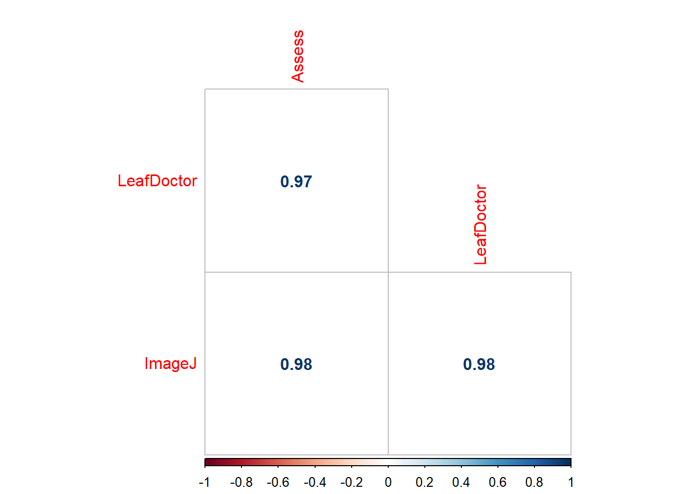

A análise de correlação permite verificar se as variáveis estão positivamente correlacionadas (quando uma aumenta, a outra também aumenta), negativamente correlacionadas (quando uma aumenta, a outra diminui) ou se não há correlação entre elas.
Importação dos dados
library(tidyverse)
── Attaching core tidyverse packages ──────────────────────── tidyverse 2.0.0 ──
✔ dplyr 1.1.4 ✔ readr 2.1.5
✔ forcats 1.0.0 ✔ stringr 1.5.1
✔ ggplot2 3.5.1 ✔ tibble 3.2.1
✔ lubridate 1.9.3 ✔ tidyr 1.3.1
✔ purrr 1.0.2
── Conflicts ────────────────────────────────────────── tidyverse_conflicts() ──
✖ dplyr::filter() masks stats::filter()
✖ dplyr::lag() masks stats::lag()
ℹ Use the conflicted package (<http://conflicted.r-lib.org/>) to force all conflicts to become errors
Pearson's product-moment correlation
data: imgs$Assess and imgs$LeafDoctor
t = 31.119, df = 68, p-value < 2.2e-16
alternative hypothesis: true correlation is not equal to 0
95 percent confidence interval:
0.9466882 0.9792005
sample estimates:
cor
0.9666367
# testa se coeficiente é zero (h0)cor(imgs$Assess, imgs$LeafDoctor)
[1] 0.9666367
Interpretação: correlação forte Quanto maior a correlação, menor p-valor
library(corrplot)
corrplot 0.92 loaded
cor_imgs2 <-cor(imgs2)corrplot(cor_imgs2, method ='number', type ="lower", diag =FALSE)

Análise de correlação com outros conjuntos de dados
campo <-gsheet2tbl("https://docs.google.com/spreadsheets/d/1bq2N19DcZdtax2fQW9OHSGMR0X2__Z9T/edit#gid=866852711")campo2 <- campo %>%select(DFC, FER, PROD)corgraph(campo2)
Var1 Var2 cor p
2 FER DFC 0.9316978 9.864101e-15
3 PROD DFC -0.6928161 1.110652e-05
6 PROD FER -0.6258321 1.277444e-04
Análise de regressão com modelo linear - primeira ordem
lm2 <-lm(nplants ~ trat,data = exp2)summary(lm2)
Call:
lm(formula = nplants ~ trat, data = exp2)
Residuals:
Min 1Q Median 3Q Max
-25.7816 -7.7150 0.5653 8.1929 19.2184
Coefficients:
Estimate Std. Error t value Pr(>|t|)
(Intercept) 60.9857 3.6304 16.798 4.93e-14 ***
trat -0.7007 0.1605 -4.365 0.000247 ***
---
Signif. codes: 0 '***' 0.001 '**' 0.01 '*' 0.05 '.' 0.1 ' ' 1
Residual standard error: 12.95 on 22 degrees of freedom
Multiple R-squared: 0.4641, Adjusted R-squared: 0.4398
F-statistic: 19.05 on 1 and 22 DF, p-value: 0.0002473
Análise de regressão com modelo quadratico - segunda ordem
exp2$trat2 <- exp2$trat^2lm3 <-lm(nplants ~ trat + trat2,data = exp2)summary(lm3)
Call:
lm(formula = nplants ~ trat + trat2, data = exp2)
Residuals:
Min 1Q Median 3Q Max
-25.439 -6.019 1.789 8.016 19.561
Coefficients:
Estimate Std. Error t value Pr(>|t|)
(Intercept) 66.30156 4.42097 14.997 1.08e-12 ***
trat -1.77720 0.58467 -3.040 0.00623 **
trat2 0.02223 0.01166 1.906 0.07036 .
---
Signif. codes: 0 '***' 0.001 '**' 0.01 '*' 0.05 '.' 0.1 ' ' 1
Residual standard error: 12.24 on 21 degrees of freedom
Multiple R-squared: 0.5432, Adjusted R-squared: 0.4997
F-statistic: 12.49 on 2 and 21 DF, p-value: 0.0002675
AIC(lm2)
[1] 194.9597
AIC(lm3)
[1] 193.1284
Interpretação: Maior o valor de r2 no segundo modelo, então o modelo quadrático explica melhor a relação entre variáveis. Função = 66,3 - 1,77* TRAT + 0,02* TRAT2